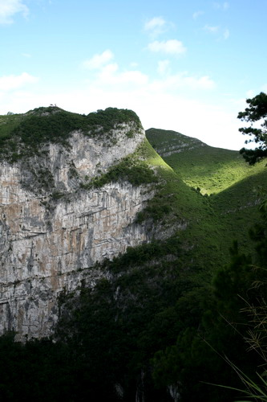

乐业天坑
百色乐业县的天坑群是一个世界上极为罕见的喀斯特溶洞群，当地人把它们叫做“大石围”。它形成于6500万年前，形状犹如一个个巨大漏斗，隐藏在群山峻岭之中，经过初步考察已经认定这是目前世界上最大的天坑群。
目前世界上只有俄罗斯、澳大利亚、巴布利亚几内亚发现过天坑，近年来重庆南川地区发现过三个深约300米的天坑。而乐业天坑群，由近20个天坑组成，最深的达600多米，浅的也有300多米。乐业天坑群几乎囊括了各种类型的天坑和溶洞的景观，具有极高的科考、探险价值，被专家称为“天坑博物馆”和“世界岩溶圣地”。
中国科学院和中国洞穴协会的专家们最终确定乐业天坑群是世界规模最大的天坑群，已发现天坑23个，其中最大的大石围天坑底部分布的原始森林面积为世界第一、垂直高度为世界第二。专家还测量了大曹溶洞地下大厅，长300米、宽200、最高处达260米，对比分析后确定大曹溶洞地下大厅是我国最大的地下大厅，也是世界第二大地下大厅，完全可以放得下一个北京工人体育场，地下大厅顶部距离外界地面只有20米，是一个正在形成的天坑。有关专家表示这一发现对于研究天坑溶洞的成因构造提供了最直观的科学依据。科考队已经成功下达最深天坑——大石围600米的底部后，发现一批神秘的洞穴动物，其中的两类动物已被中科院专家认定是新的物种。分别被命名为天坑中国溪蟹和张氏幽灵蜘蛛。值得一提天杭天坑的是天坑中国溪蟹是我国迄今为止发现的唯一专门生活在洞穴中的蟹类。还有十几种动物标本由于形态特殊，难于分类，正在分类鉴定中。中科院动物所的研究员陈国孝告诉记者：它的发现对研究和防治流行于我国南方的肺吸虫病有着极高的医学价值。
在天坑这个封闭的环境中还发现许多史前时期的珍稀植物如三叶梭，在大石围天坑底部发现了一片的原始蕨类桫椤林，数量达60多棵。专家表示，天坑下生存的动植物不仅是保存了一个古生物的基因库，也是研究古环境、古气候难得材料。这些对乐业天坑群地区申报世界自然遗产来说都是举足轻重的材料。
说乐业大石围是进入地球的心脏之门，是一种很诗意的说法，但它的确说明了乐业大石围的险峻和独一无二。 乐业大石围天坑的发现让世界为之震惊。随着中外科学考察队的多次探索和考查，乐业大石围天坑群，已渐渐被撩开神秘的面纱。
大石围位于乐业县同乐镇刷把村的北边，属红水河南端的干热河谷地带，经有关岩溶地质专家和岩溶洞穴专家实地考证，大石围的地下原始森林面积为世界第一，深度约为613米，居世界同类大型岩溶漏斗第二，长约600米，宽约420米，其容积约0。8亿立方米，也处于世界第二位。它集独特的溶洞与原始森林和珍稀动植物于一体的竖井，洞中有洞，洞内藏河，冷热交汇的两条地下暗河，形成了独特奇绝的景象。地下暗河中石笋挺拔峭立，石柱赫然擎天，大小石瀑遍布整个洞内。它有着世界“岩溶圣地”的美称。据说，象这样奇异的大石围景观，在乐业县有20多个。乐业县以大型天坑群，溶洞群，地下河，和原始森林以及珍稀动植物为特色的旅游景观正在成为中外旅游者向往的新热点。
站在大石围海拔1660米的西峰之上，白云就在头顶，无边无垠的云朵竟然也组合成一个巨大的圆型天洞，与地下的"天坑"遥相呼应，这是天与地的对话么？云朵的身姿在连绵的群峰间投下婀娜的剪影，她的水袖轻拂之处，浓荫匝地，微风吹送。由峰巅之上的观景台向下俯瞰，山势险峻，洞底深不可测，再向谷底遥探几眼，竟然有几分晕眩的感觉，好似双脚立刻腾空，没了根基一样。这巨大的石坑，让人联想到世界浑沌之初，天上陨石以雷霆万钧之势冲将而来的威力。垂直的山壁，无数的竖型条纹会不会是这种说法的佐证？不过这推测也只是许多游人自娱自乐的肋兴罢了。
雄伟壮观的大石围在普遍秀颀纤柔的南方风景中不是很多见，它好象是南方景致中的一个另类。给柔媚以粗犷，给婉约以大气，给平实以高昂，才会深得自然之韵律的丰富和完整。这也许是众多看尽了画山绣水的人们对大石围趋之若骛的原因吧。
